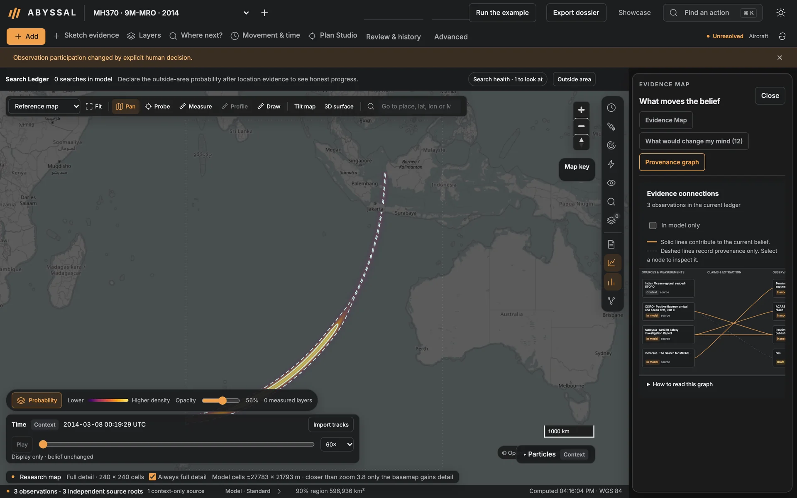
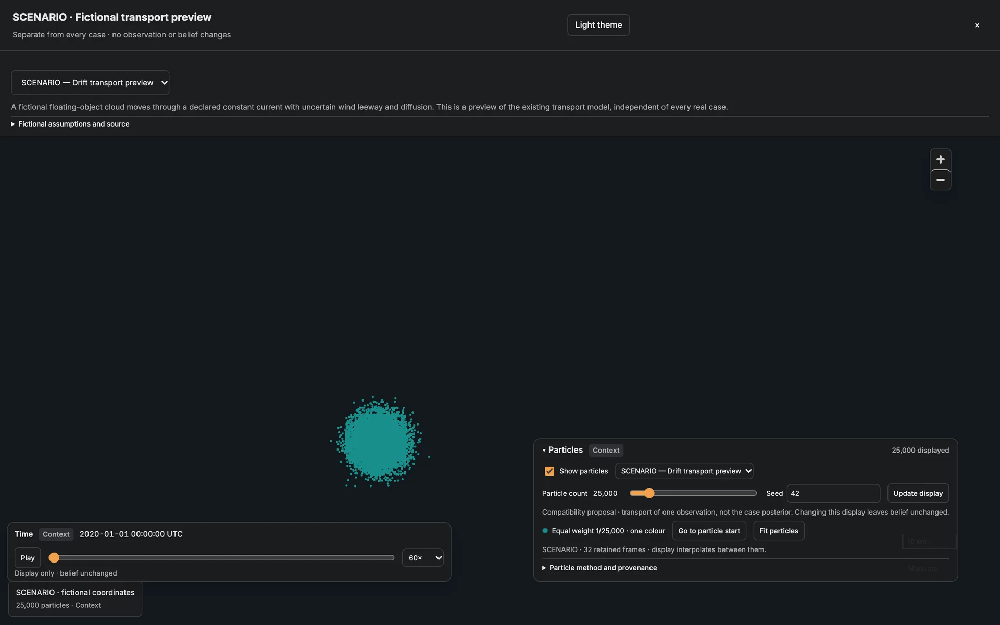
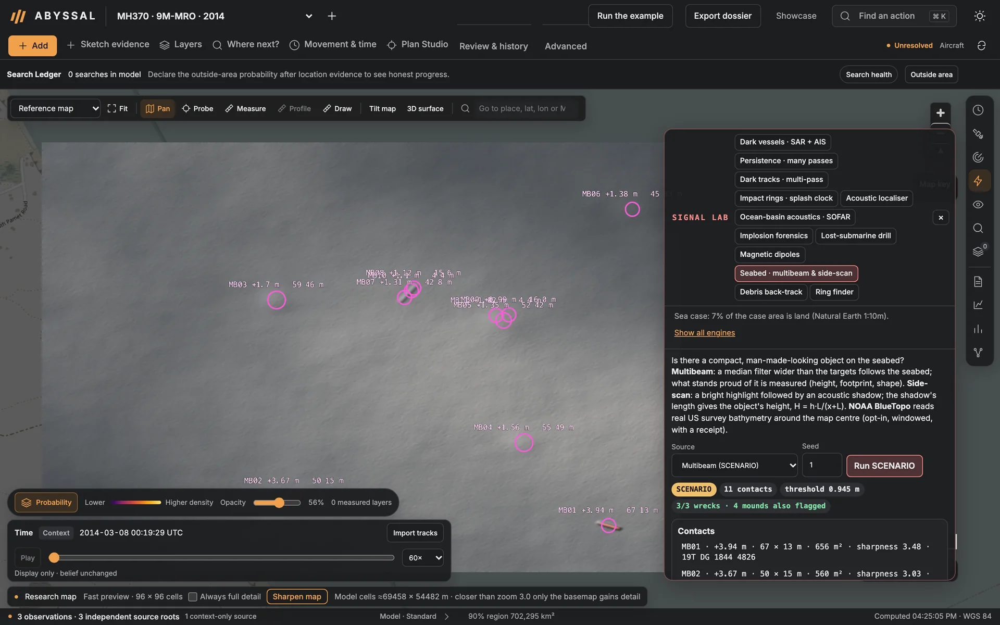
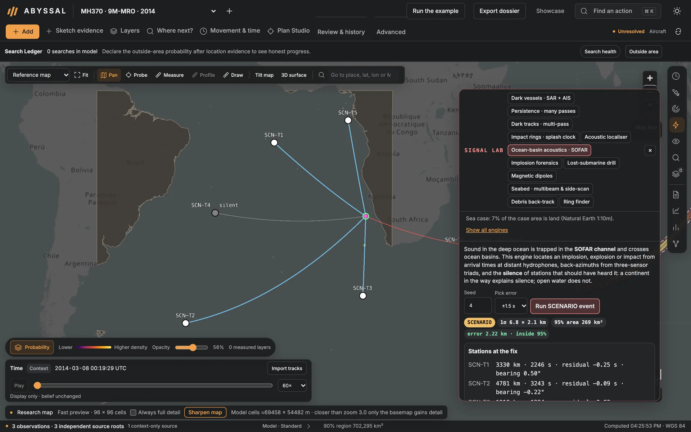
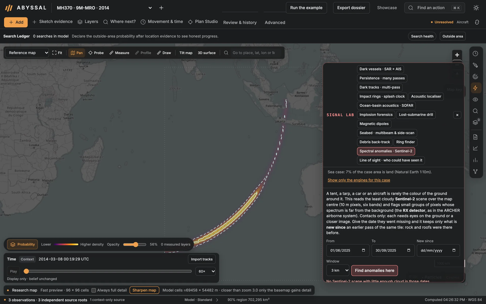
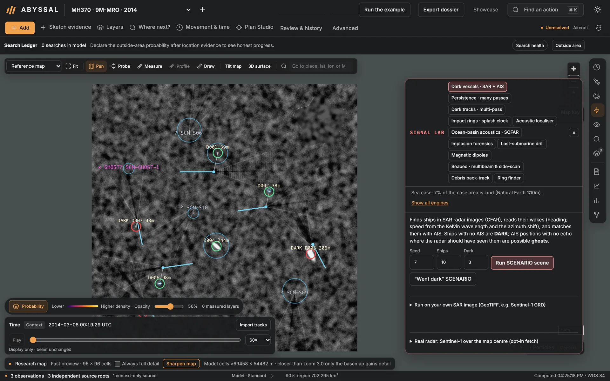
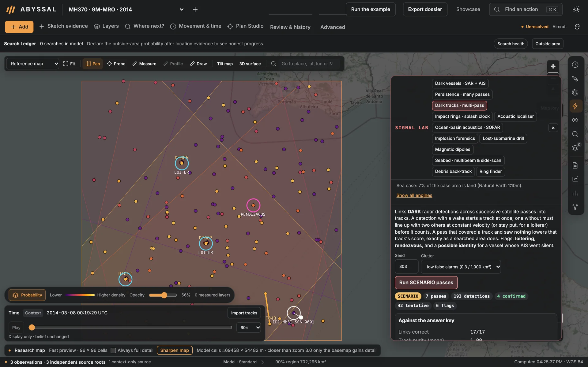
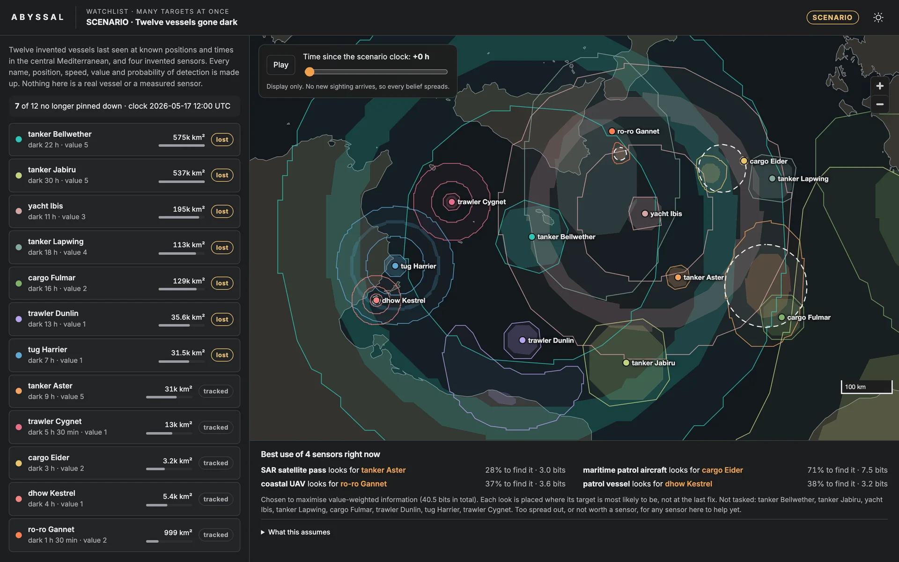
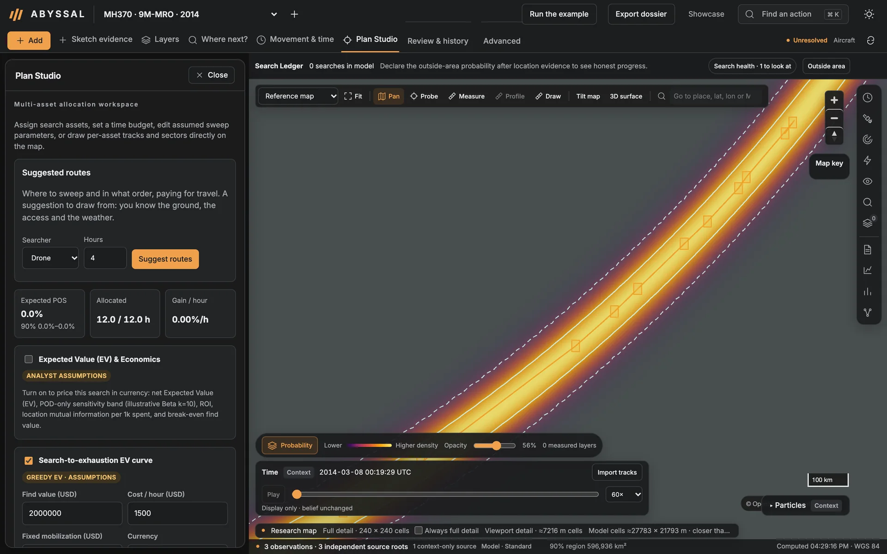

Malaysia Airlines flight 370 disappeared on 8 March 2014 and has not been found. Over twelve years, seabed surveys by the Australian Transport Safety Bureau (ATSB) and Ocean Infinity have imaged more than 230,000 km² of the southern Indian Ocean along the seventh Inmarsat arc without locating the aircraft. It would be easy to build a bespoke, one-off MH370 dashboard with hardcoded checkboxes that apply to no other search on Earth. That is the wrong engineering standard. What follows treats MH370 inside ABYSSAL's general-purpose investigation workbench — the exact same evidence ledger, live toggling controls, provenance fusion graph, particle filter, Ops Console, Signal Lab detectors, and Plan Studio allocator used on any maritime or aerial search — paired with a raw-data reanalysis of every public measurement.
Three rules hold throughout. First, every real MH370 file is ingested from raw public data with a cryptographic receipt (URL, timestamp, byte length, SHA-256 digest, licence). Second, every physical forward model is calibrated against independent ground truth before it scores the case. Third, wherever Signal Lab demonstrates a physical detector on a synthetic benchmark scene (multibeam sonar, SAR dark vessels, SOFAR acoustics, debris back-track, multi-target watchlist), ABYSSAL stamps it explicitly as SCENARIO so synthetic verification can never bleed into a real posterior.
Not found. Two independent satellite channels — timing alone (Doppler discarded) and timing plus Doppler — both place the end of a steady autopilot flight between 37.4°S and 39.7°S on the 7th arc. Measuring the published ATSB Phase 2 sonar mosaic directly from pixels (~60 m resolution) shows 99.67% of the ±25 NM band across 36.0°S–39.45°S is imaged: coverage gaps can hide a 250 m debris field for only 0.013% of the prior. If the flight was steady, the wreck is in one of three places: just south of the searched limit (39.45°S–40.5°S, never searched — 36.0% of the steady posterior, ~29% after second-round acoustic and altimeter nulls, ~3× the density per km² of any alternative), inside the densest searched core (37.5°S–38.6°S) imaged but unrecognised in shadowed terrain, or beyond ±25 NM after a glide that the final two Doppler measurements argue against (glide posterior weight 0.17).
01The live workspace: toggling evidence, provenance, and model diagnostics
In ABYSSAL, nothing enters the belief surface implicitly. Primary documents, numerical grids, and derived likelihoods sit in the retained Archive with their original files intact; admitting or removing any observation immediately recomputes the posterior in double-precision log space and reports the exact change in Shannon entropy and 90% search area.
The figure below shows this running live on the MH370 case. Clicking Remove on a single admitted observation — CSIRO's positive flaperon recovery and ocean-drift interpretation — updates the map on the spot: the 90% highest-density region widens from 596,936 km² to 756,423 km², Shannon uncertainty rises from 10.29 to 10.73 bits, and an immediate Undo control lets an analyst test sensitivity without mutating the audit history. Every other admitted source displays its exact Kullback–Leibler contribution (for example, 4.358 bits for the combined Inmarsat satellite handshakes).

Because real investigations routinely cite five papers that all trace back to one original measurement, ABYSSAL maintains a live Fusion Graph linking every retained source root (ETOPO seabed bathymetry, CSIRO drift analysis, Malaysia Annex 13 Safety Report, Inmarsat Journal of Navigation) to the claims and observations derived from it. Clicking any node inspects its downstream impact on the posterior and flags shared provenance before correlated sources can be double-counted.

Alongside the Fusion Graph, the right-hand Inspector · Model pane exposes three live tabs — Evidence, Diagnostics, and Uncertainty. Rather than hiding how likelihoods are combined, Diagnostics states the exact contamination semantics in force (v2 · normalized contamination, \(L = (1 - r) + r\,K / \mathbb{E}_{\text{prior}}[K]\)), total posterior entropy (7.881 bits at preview resolution), and total information gained over the uniform area prior (5.309 bits).

02Satellite physics, upper-air winds, and timing-only confirmation
At 16:42 UTC on 7 March 2014, Boeing 777-200ER 9M-MRO departed Kuala Lumpur for Beijing. After crossing waypoint IGARI over the South China Sea, its secondary transponder went silent; Malaysian military primary radar tracked a turnback across the Malay Peninsula past Penang and northwest along airway N571 until 18:22:12 UTC. For the next six hours, the only live telemetry came from the aircraft's Inmarsat Classic Aero satellite data unit (SDU) answering hourly log-on interrogations from Inmarsat-3F1 until 00:19:29 UTC.
Each handshake yields two independent physical observables: the Burst Timing Offset (BTO) — total round-trip signal propagation time from the Perth ground earth station through Inmarsat-3F1 to the aircraft and back — and the Burst Frequency Offset (BFO) — the received carrier Doppler shift driven by relative line-of-sight velocity, the satellite's \(\approx 1.6^\circ\) orbital inclination, and SDU uplink pre-compensation:
Before scoring a single MH370 trajectory, ABYSSAL's Classic Aero forward model was validated against published calibrations from Ashton et al. (2015) and Davey et al. (2016): reproducing the 88 Hz ground calibration (Table 5) to 0.3 Hz, the known 17:07 UTC aircraft state (Tables 7–8) to ~1 Hz, and all 12 validation rows (Table 9) within 1.5 Hz — catching an inverted downlink Doppler sign on the first draft before any flight path was run.
To model a seven-hour flight crossing the southern subtropical jet accurately, hourly ERA5 upper-air winds and temperatures (175–350 hPa, \(0.5^\circ\) grid) were pulled from Google Cloud's ARCO-ERA5 archive and checked directly against the aircraft's own ACARS reports prior to loss:
| ACARS time (UTC, FL350) | Measured wind | ERA5 wind | Temp diff |
|---|---|---|---|
| 17:01:43 | 069.6° / 17.4 kt | 069° / 19.4 kt | −1.1 °C |
| 17:06:43 | 070.0° / 17.1 kt | 067° / 17.3 kt | −1.1 °C |
Across 4,400 wind-aware autopilot configurations in three families — constant Mach (1,100 configs), falling Mach long-range cruise (2,200 configs), and weak-assumption Mach 0.55–0.86 with inflated 15 Hz BFO noise (1,100 configs), marginalising over 0 or 12 NM lateral offset past MEKAR — geodesic (LNAV) and constant-true-track solutions fit all 13 measurements cleanly (\(\chi^2 \approx 6\)) and cross the 00:19:29 UTC 7th arc between 37.2°S and 39.8°S (median 38.15°S–38.50°S).
The BTO-only test and the final dive
To test whether BFO physics is carrying the inference, we discarded every BFO measurement completely and ran a 5,040-cell timing-only scan (Mach 0.45–0.86, 1° control-angle grid with Gauss–Newton refinement). 90% of the timing-only mass still ends between 39.7°S and 37.4°S (median 38.4°S). Every steady cell north of 36°S carries posterior weight below \(10^{-9}\). When those timing-only tracks are scored against the BFOs they never saw, their BFO RMS residual is 3.7–5.9 Hz — right at the published noise floor. Both satellite channels agree independently.
At 00:19:29 and 00:19:37 UTC, following fuel exhaustion and automatic APU restart, two BFO bursts arrived eight seconds apart. Re-deriving vertical rate gives a descent accelerating from ~3,100–6,000 ft/min to ~13,600–16,500 ft/min (~0.67 g downward), while clean carrier-to-noise ratios (\(C/N_0 = 40.6\) and \(43.4\text{ dB-Hz}\)) show the antenna remained in satellite view. Folding the final-BFO dive/glide likelihood ratio (base \(0.2\), swept \(0.05\text{–}0.5\)) cuts the posterior weight of an extended glide (\(|n| \le 110\text{ NM}\)) from 0.50 down to 0.17, keeping 82.9% of the posterior within ±25 NM of the 7th arc.
03Particle filters, live currents, and correlated debris drift
Static probability surfaces are only half of a maritime search: floating debris and survivors move continuously with ocean currents, Stokes drift, and wind-driven leeway. ABYSSAL handles dynamic transport in three distinct layers — GPU particle advection, live oceanographic forcing in the Ops Console, and correlated inverse drift in Signal Lab.
The Particle Transport Engine renders 25,000 equal-weight WebGL particles advecting and diffusing across 32 retained interpolated time frames with deterministic seeds and explicit provenance. To enforce epistemic hygiene, particle visualisations remain strictly context-only unless bound to an approved drift observation with declared forcing, and standalone previews carry an explicit SCENARIO banner.

1/25,000) interpolated smoothly across 32 retained time frames with deterministic seed control. Changing display parameters or running a scenario preview never alters the case's saved belief surface.For live operational situational awareness over the search corridor, the Ops Console overlays real-time 10 m wind forecasts and surface ocean current streamlines directly onto the MH370 7th arc alongside field tools (Drift, Bearings fix, Shadow clock, Horizon, Search pattern, Track gaps, and Sea & survival).

Where ocean drift meets Bayesian inference on MH370, the single biggest mathematical trap is treating multiple recovered debris items as independent draws. Twenty-seven confirmed or likely items of 9M-MRO washed ashore on Réunion, Madagascar, Mozambique, Tanzania, and South Africa from July 2015 onward. Every item rode through the same Indian Ocean wind and eddy field: their transport errors are strongly correlated. Signal Lab's Debris back-track engine demonstrates the trap directly on a controlled six-item benchmark: treating six finds as independent shrinks the 90% region falsely from 6,143 km² down to 4,155 km² — "five echoes, one witness".

On the real MH370 archive, ABYSSAL ingested 36 years of NOAA Global Drifter Program 6-hourly tracks (1990–2025: 6.0 million fixes, 4,700 drifters, 3.5 million undrogued fixes). An initial \(1^\circ\), 4-day Markov transition matrix was rejected as over-diffused after failing a direct empirical check: it predicted a ~5% Réunion arrival probability within 508 days from 39°S, whereas 0 out of 72 real undrogued drifters passing near 39°S ever reached Réunion in 508 days. Replacing the Markov chain with direct censored drifter analogs gave a clean gradient (0/60–80 at 37°S–40°S; 0–1/40–60 at 32°S–36°S; 3–5/27–46 at 25°S–31°S). Under drifter-like windage across five independent find groups, drift favours ~29°S over ~38°S by ~20×, dropping to ~2–3× when the travel horizon is stretched 1.5× for the higher-windage flaperon tested by CSIRO. Pushing straight back in the opposite direction are two real null observations: zero MH370 debris ever found on Western Australia, and CSIRO's analysis of the March–April 2014 aerial surface search assigning near-100% sighting probability across 26°S–33°S where nothing was spotted.
04Seabed sonar: automated contact detection and pixel-measured coverage
In deep-water search, sonar plays two roles: finding compact man-made anomalies on the seabed, and proving mathematically where the target is not. Signal Lab's Seabed · multibeam & side-scan engine handles the forward detection physics directly inside the workspace — subtracting broad bathymetry with a median filter wider than the target footprint to isolate proud objects by height, area, and sharpness, and inverting side-scan acoustic shadows via \(H = h \cdot L / (x + L)\) (with opt-in windowed ingestion of real NOAA BlueTopo survey bathymetry).

MB01 +3.94 m · 67 × 13 m · sharpness 3.48), recovering 3/3 wrecks while honestly reporting 4 natural mounds also flagged.For the real MH370 seabed negative search, prose summaries proved too imprecise: an early draft read search widths from report text and over-credited Ocean Infinity's 2018 strips across 32.5°S–36°S. Instead, ABYSSAL fetched Geoscience Australia's public Phase 2 bathymetry/sonar mosaic at zoom 11 (60.5 m pixels) and measured imaged coverage cell by cell. Total measured area: 120,522 km² (matching the ATSB's ~120,000 km²). North of ~35.5°S, the ATSB ±25 NM strip was only 42–69% imaged — explaining directly why Ocean Infinity opened its 2018 search there.
Inside the ATSB core band (36.0°S–39.45°S, ±25 NM: 59,600 km²), pixel counting settles the "hidden in a sonar gap" hypothesis definitively: 99.67% is imaged, leaving just 198 km² of holidays, with the only sizeable holes (15.6 km² and 51.3 km²) sitting at the far southern margin (39.1°S–39.25°S). Integrating the steady-flight dive prior over gap interiors at least radius \(R\) from every imaged pixel gives:
| Debris-field radius \(R\) | Steady prior mass hidden in mosaic gaps |
|---|---|
| 100 m | 0.017% |
| 250 m | 0.013% |
| 500 m | 0.009% |
| 1,000 m | 0.005% |
We then pulled 2,024 zoom-15 tiles (~3.8 m pixels, ~1,900 km² across 37.65°S–38.8°S within ±7.5 NM — roughly 25% of the entire steady prior) and scored them through ABYSSAL's anomaly detector. As a positive control, it flagged 16 of the 43 published ATSB contacts (median at the 88th local percentile). Inspecting the top 40 of 225 candidate clusters at 1–4 m resolution showed scarps, ridge crests, volcanic outcrops, swath seams, and isolated boulders — no angular aircraft debris fan. The takeaway is crisp: if MH370 sits inside the searched core, sonar did not skip over it — it imaged the site and failed to recognise it in steep terrain or acoustic shadow.
05Ocean-basin acoustics (SOFAR) and leads tested and closed
Sound trapped in the deep-ocean SOFAR channel propagates thousands of kilometres across entire ocean basins. Signal Lab's Ocean-basin acoustics · SOFAR engine localises an impact or implosion jointly from distant hydrophone arrival times, three-sensor triad back-azimuths, and the silence of stations that should have heard it — distinguishing open-water silence (evidence against a location) from continent-blocked paths (uninformative).

Applying that exact discipline — raw archives, real physical controls, calibrated null tests — to every public acoustic, seismic, radio, and witness lead on MH370 closed almost every one as a null result:
- 22 island & coastal seismometers (T-phase back-projection) — closed, flat likelihood: 6–9 March 2014 FDSN waveforms across Cocos, Christmas Island, Amsterdam, Kerguelen, Diego Garcia, Maldives, Réunion, and Western Australia. Calibrated on real same-week earthquakes: cleanly detected Carlsberg Ridge \(M_w 5.07\) (\(p = 0.0002\)) and Central Indian Ridge \(m_b 3.99\) (\(p = 0.003\)). Capped MH370 windows returned \(p = 0.29\text{–}0.95\).
- IMOS hydrophones (Perth Canyon 3315/3376, Scott Reef 3250, Portland 3274) — weak / quiet: 1.05 GB of raw 6 kHz CMST audio plus 384 Portland logger files covering 39.45°S–40.5°S (01:14:46–01:19:53 UTC). Clock-checked against Curtin's 01:33:44 (15.6 dB) and 05:03:01 (17.8 dB) reference events. Uncovered an interleaved 5-in-15 minute duty-cycle blind band (0–40% coverage) across 32.5°S–34.5°S; covered windows are quiet (3–8 dB, \(p = 0.36\text{–}0.97\)), and a 4-hydrophone weak-signal stack across 97 arc latitudes shows no peak (southern extension stack 0.86 vs null median 3.5, \(p \approx 0.6\)).
- WSPR radio anomalies (time-shift null test) — closed, no signature: Full 145 MB WSPRnet March 2014 archive. Enrichment \(E\) on links crossing within 50 km of best LNAV (38.1°S) and magnetic-track (33.6°S) paths against 1,000–4,000 km controls across all 30 other nights gave \(E = 0.91\) (SNR jumps \(\ge 6\text{ dB}\)) and \(E = 0.62\) (drift) — crossing links were less anomalous than controls (\(p = 0.19\text{–}0.48\)).
- Maldives sighting, overflight seismometers, Gaofen-1 & DART buoys — closed by physics: Kudahuvadhoo sits ~2,000 km inside the 00:19:29 UTC 7th arc (BTO residual \(-13,200\;\mu\text{s}\)); MY.KUM and MY.IPM sample at 20 sps (10 Hz Nyquist, below jet noise); the 18 March Gaofen-1 object lies 732 km off-arc (0.85 m/s mean drift required for 10 days); and a ~4 GJ impact yields ~0.5 mm in 10–30 s waves at 1,000 km, attenuated at 4 km DART depth beneath metre-scale swell.
Before capping single-station spikes in the 22-station seismic stack, three MH370 windows hit \(p = 0.03\text{–}0.07\) — the exact kind of marginal \(p\)-value that regularly launches headlines. Opening the raw seismograms killed all three immediately: they were driven by two uncatalogued local earthquakes (Christmas Island at 01:16:11 UTC showing a sharp vertical P-wave followed 35 s later by horizontal S-waves ~290 km away, and Réunion at 01:26 UTC). A statistic that vanishes when you inspect the physics is noise.
06Satellite imagery, spectral slick screening, and dark-fleet tracking
Beyond static archives, ABYSSAL integrates orbital remote sensing directly inside the case viewport. The Satellite View Time Machine streams daily NASA GIBS / EOSDIS VIIRS 250 m overviews alongside 30 m Sentinel-2 and Landsat 8/9 swaths right underneath the MH370 posterior so an analyst can scroll day by day, inspect cloud cover, and compare passes without leaving the coordinate frame.

When screening optical passes for surface oil slicks, life rafts, or unnatural colours against open ocean or terrain, Signal Lab's Spectral anomalies · Sentinel-2 tab runs the six-band 10 m Reed–Xiaoli (RX) spectral anomaly detector — the same statistical Mahalanobis-distance detector used in the ARCHER airborne search system — with a New since change-detection filter that suppresses static rocks, reefs, and glints present before the disappearance.

On historical 2014 MH370 imagery, both optical and radar-altimeter slick searches were audited quantitatively. NASA GIBS Terra/Aqua MODIS true-colour passes (7–10 March 2014, ~250 m) paired with OSCAR currents + 3% NAVGEM wind drift of residual oil/hydraulic fluid (~1 m³) showed 91–96% cloud cover over 39.45°S–40.5°S on 8 March, while clear-water 7 March control scenes produced 30–540 contrast specks per 10,000 km² — proving 8-bit MODIS outside sun glint (~0.93 DN ocean noise) cannot resolve a 1 m³ sheen. Checking all 128 Jason-2 GDR-D/F radar altimeter passes (8–12 March) found Pass 077 crossing the predicted sheen from a 40.0°S impact 11 hours later (7 footprints within 32 km) with flat backscatter (+0.05 dB at 6.9 m/s wind; ~10–15% overlap probability).
Dark vessels, multi-pass tracking, and the Watchlist
In modern maritime search and intelligence — where commercial vessels spoof transponders, switch off AIS in contested corridors, or loiter near undersea infrastructure — optical imagery fails through cloud and darkness, whereas Synthetic Aperture Radar (SAR) sees through both. ABYSSAL's Signal Lab and Watchlist run the full dark-fleet pipeline inside the exact same general-purpose workbench:

DARK D003 43m, DARK D005 306m), and flags AIS positions with no radar return (GHOST? SCN-GHOST-1).
LOITER, RENDEZVOUS, and probable silent-AIS identities.
07Residual probability, Plan Studio allocation, and what to measure next
Returning to the real MH370 posterior on the 7th-arc corridor \((s, n)\) (42°S–18°S at 0.05° spacing, ±150 NM at 2.5 NM spacing): seabed negative searches dominate the information ledger by more than an order of magnitude (1.37 bits in dive mode, removing 80.1% of the prior mass), followed by debris drift (0.11 bits), the 2014 aerial surface search (0.06 bits), Western Australia absence (0.03 bits), IMOS hydrophones (0.01 bits), and the calibrated island seismometers (0.00 bits).
Once the posterior is fused, ABYSSAL's Plan Studio turns belief into concrete asset allocation — placing multi-asset search boxes directly along the highest-density ridge of the 7th arc while pricing marginal probability of success against vessel endurance, hourly operating cost, and a greedy Search-to-exhaustion EV curve.

Ranking the four remaining MH370 candidate zones by posterior probability per 1,000 km² of new search across three explicit readings of the flight — and sweeping 28 one-at-a-time assumption perturbations — makes the operational trade-off unmistakable:
| Candidate zone | Area (km²) | Steady flight | Steady + fuel trim (×0.2 S) | Full mixture (+10% non-steady) |
|---|---|---|---|---|
| 1. South extension (39.45°S–40.5°S, ±25 NM, unsearched) | 23,395 | 36.0% (1.54) | 10.6% (0.45) | 17.0% (0.73) |
| 2. Core re-look (36.0°S–39.45°S, ±25 NM, imaged) | 63,708 | 34.4% (0.54) | 50.1% (0.79) | 16.0% (0.25) |
| 3. Wide glide belt (60–110 NM outside arc) | 87,103 | 13.9% (0.16) | 19.4% (0.22) | 6.5% (0.07) |
| 4. North arc (18°S–25°S, ±25 NM) | 83,113 | 0.0% (0.00) | 0.0% (0.00) | 46.5% (0.56) |
Values in parentheses are posterior percentage points per 1,000 km² of search area.
Operational conclusions and the four missing measurements
- Under steady flight (supported independently by both BTO and BFO), the unsearched south extension (39.45°S–40.5°S, ±25 NM) is the single highest-density block remaining: 36.0% of the steady posterior in 23,395 km² (1.54% per 1,000 km² — roughly 3× any alternative). Even folding in the weak Portland hydrophone and Jason-2 pass 077 nulls scales it by ~0.7 to ~29%, still roughly twice the density of a core re-look. Searching the optimal 15,000 km² for a steady flight captures 40.0% of the posterior between 40.2°S and 37.5°S.
- If fuel-burn physics rules out continuous Mach 0.84–0.85 flight, a targeted AUV re-look of shadowed terrain in 37.5°S–38.6°S (±15 NM) takes first place (50.1%): Pixel counting already ruled out coverage gaps (0.013%); the uncertainty inside searched ground is where rugged seabed degraded towed side-scan POD (swinging the core re-look from 10.1% at POD 0.98 to 38.9% at POD 0.85 across the 28-run sweep).
- The north arc (18°S–25°S) is a diagnostic direction, not a ship target: It carries zero steady flight paths and exists solely via the 10% uniform allowance for unmodelled non-steady flight, piling up against the northern grid boundary (18.5°S). You do not task a vessel to a grid boundary without physical evidence that builds a real flight path there.
Four specific measurements carry the highest value of information before another ship sails: (1) a high-fidelity 777-200ER fuel-burn model for Mach 0.84–0.85 steady flight (deciding directly between the south extension and core re-look); (2) ATSB and Ocean Infinity low-confidence and acoustic-shadow polygons; (3) measured leeway windage on non-flaperon 777 debris items; and (4) 2014 recordings from CTBTO hydroacoustic stations HA01 (Cape Leeuwin) and HA08 (Diego Garcia) (public FDSN archives currently start around 2020), evaluated with the exact duty-cycle and calibration method built here.
No bespoke checkboxes, no hidden priors, and no uncalibrated detections — just one general-purpose Bayesian workbench tracing every byte from raw measurement to residual search plan.